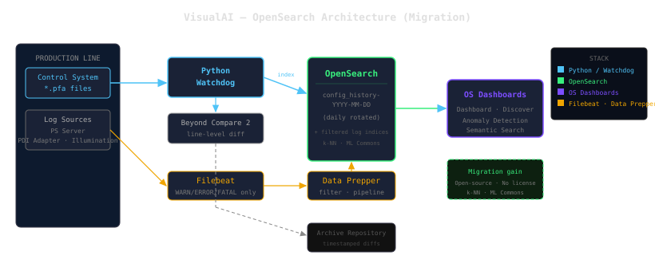

시스템 개요
VisualAI는 산업 생산라인의 제어 시스템 파라미터 파일(*.pfa) 변경을 실시간 감지합니다. Python Watchdog 서비스가 설정 파일 감시 디렉토리를 모니터링하며, 설정 변경 발생 시 Beyond Compare 2를 통해 바이너리 비교를 수행하고 변경 이력을 Elasticsearch에 기록합니다.
데이터 수집 아키텍처
설정 파일 변경 이력은 Python 에이전트가 직접 Elasticsearch(localhost:9200)에 인덱싱하며, 일 단위로 로테이션되는 config_history-YYYY-MM-DD 인덱스에 저장됩니다. 생산라인 로그(PS Server, PDI Adapter, Illumination)는 Filebeat → Logstash(172.17.1.39:5044) 파이프라인을 통해 수집되며, WARN/ERROR/FATAL 수준의 로그만 필터링하여 신호 대 잡음비를 최적화합니다.
파이프라인 구성
Filebeat 에이전트가 생산라인 서버에서 로그를 수집하여 Logstash 중앙 서버로 전달하고, Logstash에서 필터링 및 파싱을 거쳐 Elasticsearch에 저장됩니다.
설정 형상 관리 및 변경 추적
Watchdog 서비스는 파일 생성, 수정, 삭제, 이동 4가지 이벤트를 처리하며, 파일 수정 타임스탬프 기반 중복 제거 로직으로 불필요한 비교 연산을 방지합니다. 변경 감지 시 Beyond Compare 2가 라인 단위 diff를 생성하고, 결과는 참조 파일 저장소(로컬 아카이브 저장소)에 타임스탬프와 함께 보관되어 전체 변경 이력을 추적 가능하게 합니다.
키바나 대시보드 및 시각화
Elasticsearch에 저장된 설정 변경 이력과 필터링된 로그 데이터는 Kibana를 통해 통합 대시보드로 시각화됩니다. 생산라인별(linename), 로그 발생원(log_originator), 이벤트 유형별 필터링이 가능하며, 설정 변경 패턴 분석과 장애 원인 추적에 활용됩니다.
엔지니어링 결정 및 트레이드오프
| 결정 사항 | 선택 이유 | 트레이드오프 |
|---|---|---|
| Python Watchdog → Elasticsearch 직접 인덱싱 | 설정 변경은 저빈도·고가치 이벤트로 즉시 인덱싱 필요 | Logstash의 재시도 큐 및 영속성 기능 미사용 |
| Beyond Compare 2 외부 비교 엔진 사용 | 구조화된 출력 형식, 바이너리/텍스트 파일 모두 지원 | Windows 전용 의존성, 출력 파싱 로직 취약 |
| 메모리 기반 이벤트 중복 제거 | 단일 파일 저장 시 중복 이벤트 방지 | 서비스 재시작 시 상태 소실, 재시작 직후 이벤트 누락 가능 |
| 절대 경로 하드코딩 | 산업용 제어 시스템은 Windows 기반, 크로스 플랫폼 불필요 | 배포 시 정확한 디렉토리 구조 요구, 이식성 제로 |
시스템 아키텍처

ELK Stack 구성 — Elasticsearch · Logstash · Kibana (원본 배포)

OpenSearch 마이그레이션 구성 — Data Prepper · ML Commons · 시맨틱 검색
OpenSearch 마이그레이션
본 시스템은 ELK Stack(Elasticsearch · Logstash · Kibana)으로 구축되었으나, 동일한 아키텍처를 OpenSearch 기반으로 마이그레이션할 수 있습니다. Logstash는 Data Prepper로, Kibana는 OpenSearch Dashboards로 대체되며, ML Commons 플러그인을 통해 이상 탐지 및 시맨틱 검색 기능을 추가로 활용할 수 있습니다. OpenSearch는 완전한 오픈소스로 라이선스 비용 없이 동일한 기능을 제공합니다.